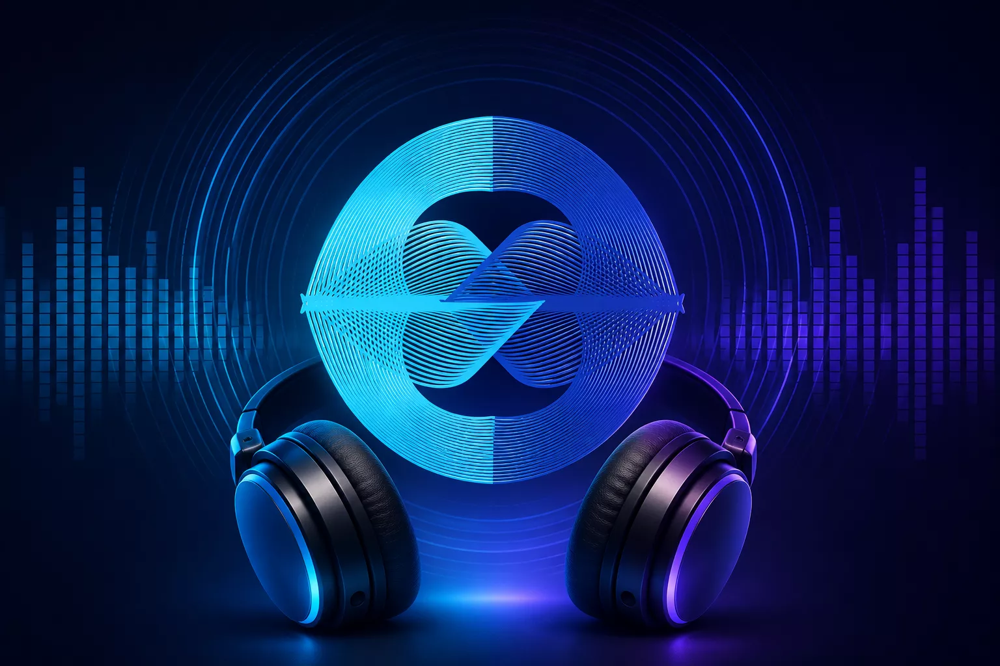

Taliferro Music Radio is a live, 24/7 stream of Taliferro's own artist roster. No search bar, no library to manage, no account to create. Pick a mood — Downtempo, Groove, or Jazzy — and press play.

Access
Free to listen. A live internet radio stream — press play and let it ride.
There's no catalog to browse and nothing to search, because it isn't that kind of product. It's one continuous live stream, the same way a radio station is — pick one of three mood-based channels and it plays. Now-playing info (track, artist, cover art) updates automatically as the stream moves from song to song.
Most music apps ask you to decide what to play next, over and over. This one asks you to decide once — which mood — and then gets out of the way. That's a deliberate trade: less control, less friction.
The stream features Taliferro's own artists, including Ty Showers (Jazz/Fusion) alongside Calima Shatiday, Trestal, Kerboo, and B T S. Each artist links out to their own Apple Music, Spotify, or Bandcamp page — the station is a way to discover them, not a replacement for following them directly.